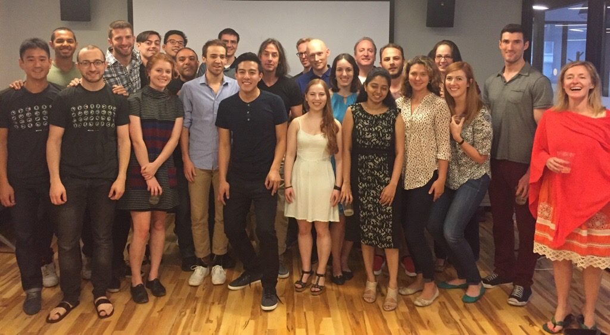

Maëlle Salmon, a Forwards collaborator, got the chance to interview Emily Robinson, who recently became a data analyst at Etsy. A very inspiring R-Lady!
Hi, Emily! Thanks for letting us interview you! You studied Decision Sciences at Rice University and then graduated from INSEAD with a Master’s degree in Management (specialization in Organizational Behavior). What are those fields? How do they help you today?
Decision Sciences was an interdisciplinary major I actually created at Rice in my sophomore year based on Carnegie Mellon’s major. Before then I’d been planning to major in economics or psychology, but I found that neither really satisfied what I was looking for: to understand how people make decisions. So I decided to take the rarely used option at Rice to design my own curriculum with the input of many faculty members, and I created a course list that was a mix of economics, psychology, statistics, and philosophy.
Organizational Behavior is a pretty broad field, but essentially is the application of sociology and psychology applied to organizations/work. So people study everything from the effect of power on behavior to the benefits and pitfalls of multicultural teams to how social activists affect corporate political activity. I focused more on the micro (psychology) side and studied women in STEM fields.
All of the statistics courses I took have definitely helped. Also, the data science project process is actually quite similar to social sciences research: you come up with a question or a hypothesis, gather and clean the data, run an analysis, and communicate your findings.
Finally, I think there’s often a place for knowledge about human and organizational behavior to come into the data science research process. I talked a lot in my interviews about how social sciences knowledge could be used in designing experiments; for example, the fact that giving people more choices actually makes them less likely to buy something, or that people from different countries use satisfaction scales differently (e.g. an American and a German may be equally satisfied with a product, but because of cultural reasons the German gives a lower score on a scale out of 10).
You then decided to become a data scientist instead. What motivated this decision? (Also, note we now assume you make decisions in a smarter way than most of us, given the name of your college major!)
Short answer: I felt data science was where the most interesting questions, tools, and data were. I also believe that working as a data scientist/analyst offers a bigger possibility for broad impact than academia. While there’s definitely a lot of interesting and important research being done in academia, it’s a very long, slow process, with a lot of luck, and often times doesn’t reach anyone outside of the ivory tower. If anyone wants the longer story, please feel free to reach out to me on twitter/email.
When did you first come in contact with R? Was it love at first sight? From which point did you feel enough at ease to be not only a R user, but also a R programmer?
I was very lucky to do my undergraduate degree at Rice University, where at the time Hadley Wickham was a Statistics Professor. I only took one course with him, an Introduction to Statistics course, which didn’t involve R, but he had also designed later courses that were taught by his graduate students. At the time I didn’t realize how prominent in the R community he was, despite my brother Dave Robinson (then a PhD student at Princeton, now a data scientist at StackOverflow) shouting at me how cool it was that I was being taught by Hadley.
Because the courses were so well-designed and taught, I definitely fell in love with R at first sight. Despite its reputation as having a steep learning curve, I found it fairly straight forward to pick up (or maybe I’m just romanticizing it in my memories). That being said, I didn’t use it much outside of my statistics courses that required it, except to make a few plots for one of my research projects. It was in graduate school that I started to use R of my own volition. As I wrote about in one of my blog posts, I got so frustrated with using STATA, the language of choice for my graduate program, for certain class assignments that I switched to using R.
I think this transition from being an R user to R programmer was also helped by some new tidyverse packages that came out in the last few years, especially dplyr. While the packages I initially learned, like reshape2 and plyr, were great, R has clearly advanced in the four years since I did most of my R courses.
What is this program you’ve done for transitioning into your new career and how did you hear about it? How much can one learn in 12 weeks?
Metis is a Data Science Bootcamp that helps people transition into careers as a Data Scientist/Analyst. I heard about it from my brother, who had spoken at Metis and gone to their career day, where students present their final projects to recruiters and data scientists. He had been really impressed by the quality of the students and their work, and so I looked into the program more. I found that it fit perfectly my background, as what I was missing was Python skills and Machine Learning knowledge. Metis is not meant to take you from 0 to 60; everyone who enters the program has some knowledge of statistics and programming, although their backgrounds still vary widely. In my cohort, we had people a few years out of college, one person with twenty years of marketing experience, and a few with PhDs in quantitative fields.

Emily’s Metis cohort plus the two instructors (two people on the right)
In terms of what you can learn in 12 weeks, Metis is not meant to make you an expert in everything they cover. Rather, by giving you exposure to many topics and having you do projects around them, you get a good enough grounding so that you can continue learning on your own. It also gives you a portfolio of projects that you can host on your GitHub and talk about during interviews. The other big benefit is the career support from the Metis career team and from the extensive alumni network. You receive help in making a resume and prepping for interviews, but also in connecting you to people at the companies you’re interested in. For me it was 100% worth it. It was also a lot of fun and I met some great people!
You had to use Python at Metis: Which language do you use the most now? Could you use only Python?
Since I just started my position, I’m not sure which language I’ll be using more. Etsy is pretty agnostic for which language its analysts use, and a lot of the work is done in SQL since we are working with such big datasets. If I had too, I could definitely use only Python, since I did use it so intensely for those few months. But I’m still definitely biased towards R and will probably be using that more.
You have just started a job at Etsy as a data scientist (congrats!). Could you tell us a little bit more about your job there? What kind of problems do you solve? How is the work organized between members of your team?
Thank you! My official title is actually Data Analyst and I’m on the analytics team; Data Scientists at Etsy are on the engineering (production) side and generally have PhDs in Computer Science/Machine Learning or similar backgrounds. While the analytics team sits together, we are embedded with other teams and serve as a sort of consultant, helping those teams improve how they use and analyze their data, run experiments, etc. For example, we have analysts working with marketing, accounting, seller services, etc.
I’ll be working on search, which I’m very excited about since search is such a big part of the Etsy experience. Etsy actually just acquired BlackBird Technologies and their team to bring AI into their search, which should offer a lot of new opportunities. I’ll be working closely with another senior analyst and the broader search sciences team.
That all being said, Etsy does a great job with orientation and the first few weeks are dedicated to meeting people, reading analytics on-boarding materials, and getting my tech stack set up. So I haven’t heard anything yet about what specific projects I’ll be working on and won’t for a little while.
What would you wish to have known sooner on your way to become a data scientist?
Don’t be intimidated! It’s easy to feel like unless you have a PhD in Machine Learning and are an expert in Big Data that there are no roles for you. This isn’t helped by the fact that some companies’ job postings read like a wish list for a Data Scientist unicorn. But if you’ve been working on building your skills, you can find a position for you. You also DO NOT need to necessarily meet all of the job requirements; don’t be afraid to apply to a job where you’re just missing one of multiple criteria, or you have a year or two fewer years of experience than they mention.
And as with almost every job, networking is critical. At some companies, there are thousands of people applying for each position, and having someone refer you can really help you get your foot in the door. Even more than that, talking to someone about the culture and day-to-day work in a company will really help you in your interview, because you’ll know more about what they’re looking for and if you’re a good fit.
Finally, don’t be hung up on titles and only focus on positions where the title is “Data Scientist”. The work you’re doing is what’s important, and some data analysts are doing work that at other companies would be classified as a data scientist job. My title is a Data Analyst (as was Hilary Parker’s when she started out at Etsy), and while I’m not going to be doing deep learning projects anytime soon, I don’t think there’s going to be any shortage of interesting and challenging work.
You mention the importance of giving back to the open-source community on your blog, Hooked on Data. What are your plans with the blog and your programming in general? (Please keep writing on your blog!)
One big thing I want to do is host some in-person R tutorials for the R-Ladies NYC group. They had their kick-off meeting a few weeks ago, and many people expressed interest in an introduction to R tutorial and a more advanced one. While there are definitely some good resources online, my favorites are DataCamp for interactive tutorials and Hadley and Garrett’s new R for Data Science book, I do think it can sometimes be easier to learn in person. I tried to get more people in my graduate program (including professors!) to use R, so I’d love to help a group that already recognizes the value of R and is eager to learn.
Other than that, I definitely want to keep blogging. I think a lot of my work at Etsy is going to be confidential, so I won’t be able to share that, but hopefully I’ll be able to talk about some cool side projects I’m doing or general principles I learned from my work. I’ve promised posts about making my first R package and my final Metis project, so I’d better get going on those!
P.S. DataCamp has a few free courses, but if anyone wants to try unlimited access you can do so for free for two days with this link. There’s some really great courses, including one by Hadley and his sister Charlotte, and another by my brother!
Last but not least, we were thrilled to learn you are a RCatLady although you don’t have a cat! Also you have a dog! Is she a good R-Dog?

Emily’s R-Dog Abby
She is the best R-Dog. I’m very excited that Etsy is a dog-friendly office, and I plan to take her into the office sometime soon. I’m sure she’ll be very well-behaved; she spends most days sleeping on her bed or sitting under my mom’s desk at home right by her feet.
Okay now we are very jealous! Thanks again Emily for talking with us, all the best for the future!
Contact Emily via her email address, go read her blog, follow her on Twitter, Github, or LinkedIn.
Disclaimer: The views expressed in this interview represent Emily’s own views and opinions, not necessarily those of Etsy.